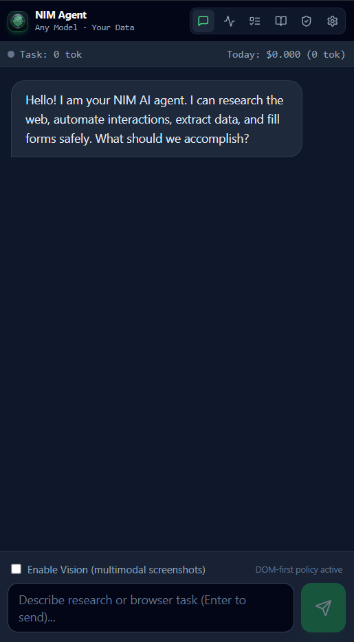

NIM AGENT is a local autonomous assistant built for Windows with Python support and an extension compatible with Chrome, Brave, Edge, and any Chromium browser. Actuate windows, process files, compose emails, and research the web with unified intelligence.
NIM AGENT's modular subsystems give you the full stack of intelligent automation — from low-level Windows UIA actuation to high-level semantic web research.

The always-on Desktop Floating HUD gives you one-keystroke access to NIM's full agent stack on Windows with Python support. The Chrome Extension runs on any Chromium browser (Chrome, Edge, Brave, Opera) and mirrors live agent state over a local WebSocket bridge.
Speak or type a goal in plain language. NIM parses intent, decomposes it into a task graph, and routes it to the correct subsystem — OS, browser, email, files, or scheduler.
The streaming agentic loop emits live reasoning steps to the HUD. Each tool call is logged with input, output, and perceptual verification — no black boxes.
SecurityGuard classifies every action for risk. Destructive, irreversible, and financially significant operations require explicit confirmation or are blocked by policy.
Goal reached. Artifacts are saved, memory is updated, and a spoken summary is delivered. Press ESC at any moment to abort, stop streams, and roll back changes.
NIM AGENT works with any OpenAI-compatible endpoint. API keys are stored exclusively in your Windows Credential Manager — never written to disk in plaintext.
Every powerful action is matched by an equally powerful safeguard. No silent changes. No irreversible surprises.
Every tool call — file write, process kill, email send — is surfaced in the HUD trace before execution. You know what's happening at every step.
SecurityGuard flags high-risk operations — mass email sends, system process termination, irreversible file deletions — requiring explicit user confirmation.
API keys are stored in Windows Credential Manager. Never written to plaintext. Never transmitted to third-party tracking servers.
SnapshotManager checkpoints every file before modification and every process state before termination. One command fully undoes any agent-made change.
Press ESC at any moment to immediately sever the LLM stream, abort in-flight tool execution, stop TTS audio, and reset the HUD to idle — zero latency.
Critical system processes (csrss.exe, wininit.exe, svchost, kernel threads) are permanently protected from inspection, modification, or termination.
NIM AGENT runs entirely on your Windows PC. No cloud account, no telemetry, no subscription. Clone the repository and launch in under two minutes.
git clone https://github.com/mohammedila812-NIM/NIM_AGENT && cd NIM_AGENT/desktop
pip install -e .
python -m src.main
chrome://extensions → Enable Developer Mode.output/chrome-mv3 directory